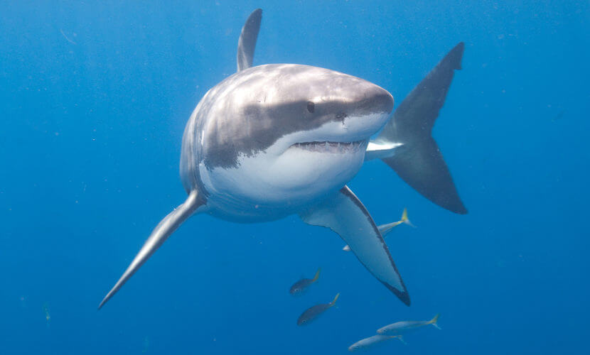
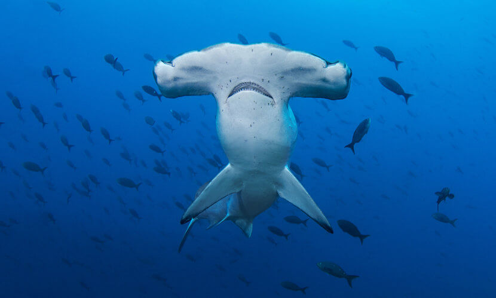
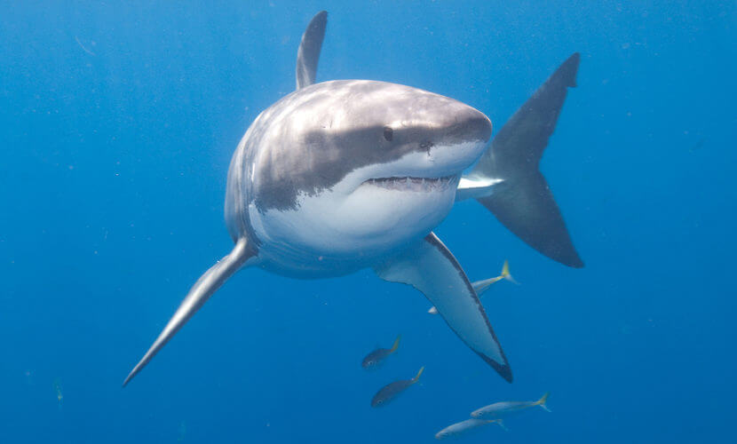
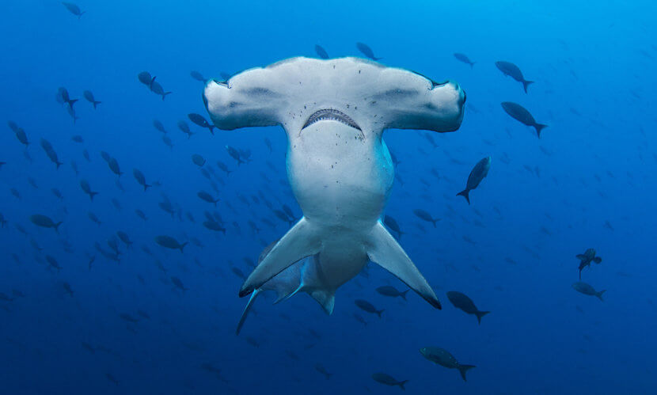

Espécies:
| Espécies | Foto |
|---|---|
| Tubarão-branco |  |
| Tubarão-martelo |  |
| Tubarão-baleia |  |
| Tubarão-azul |  |
O tubarão é um animal do grupo dos peixes cartilaginosos conhecido, principalmente, por sua característica agressiva, entretanto, nem todas as espécies são assim.
Os tubarões fazem parte de um grupo de peixes bastante amplo, com várias espécies que são diferenciadas por características do corpo e pelos seus hábitos alimentares. Alguns tubarões são bastante pequenos e outros, como o tubarão-baleia, podem atingir mais de 10 metros de comprimento.
Além disso, temos espécies que são grandes predadores, como é o caso do tubarão-branco, já outras espécies, como o tubarão-baleia, são filtradoras e alimentam-se de plâncton. Nos tubarões carnívoros, que é a grande maioria das espécies, é possível observar mandíbulas fortes e dentes afiados, os quais permitem rasgar e engolir a carne.
Os tubarões são peixes, portanto, apresentam uma série de características comuns a esse grupo de animais. Uma das características marcantes é o tipo de respiração. Assim, como os demais peixes, os tubarões apresentam respiração branquial, sendo esses capazes de retirar o oxigênio da água.
Um fato interessante sobre os tubarões é que esses animais apresentam dentes dispostos em várias fileiras, as quais movem-se para a frente da boca quando os dentes velhos são perdidos| Espécies | Foto |
|---|---|
| Tubarão-branco |  |
| Tubarão-martelo |  |
| Tubarão-baleia | |
| Tubarão-azul | |
Os tubarões são animais que apresentam a fecundação interna, ou seja, o gameta masculino é depositado no interior do corpo da fêmea. Para garantir a deposição do gameta, os tubarões machos possuem estruturas chamadas de claspers. A depender da espécie de tubarão estudada, podemos encontrar tubarões ovíparos, ovovivíparos ou vivíparos. Os ovíparos são aqueles que botam ovos, enquanto os ovovivíparos retêm os ovos no oviduto. Já as espécies vivíparas são aquelas que o filhote desenvolve-se no interior do útero.